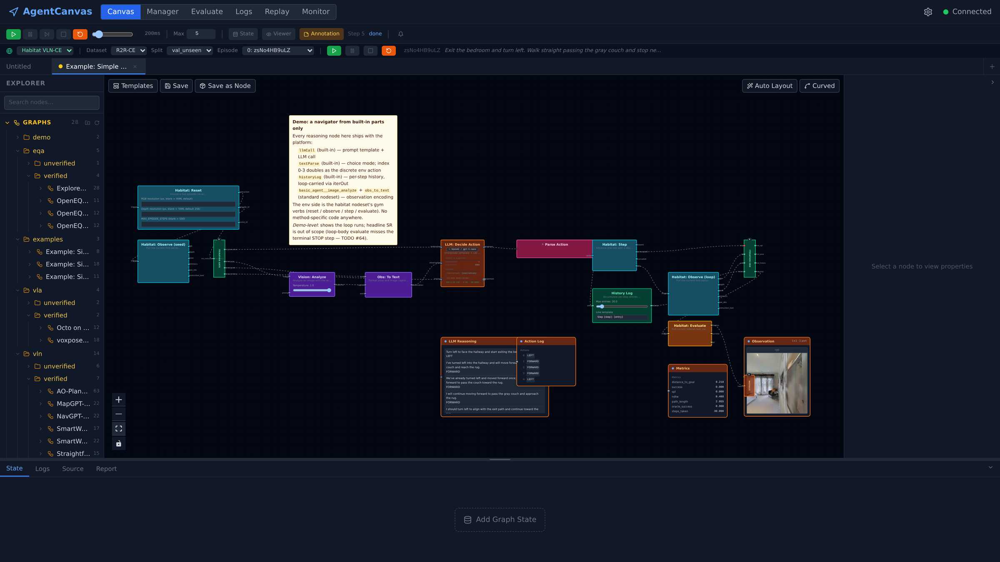
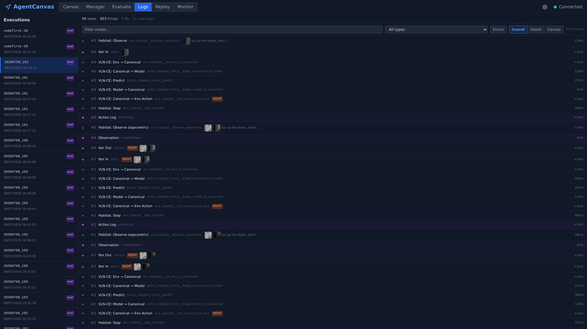
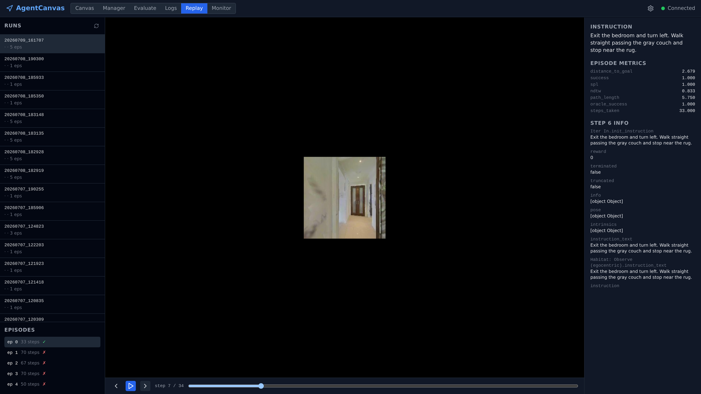
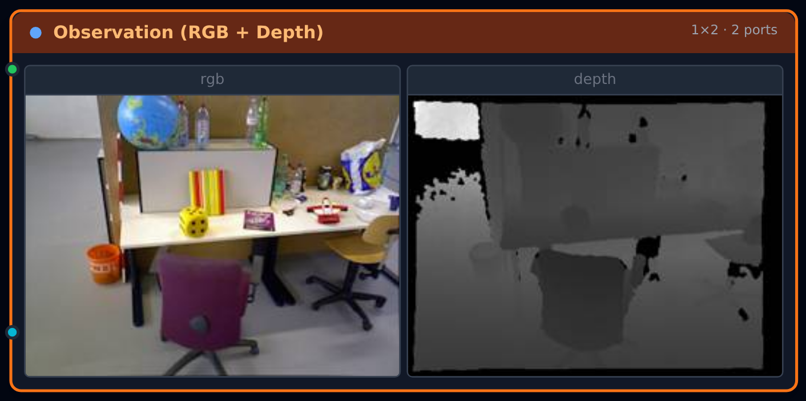
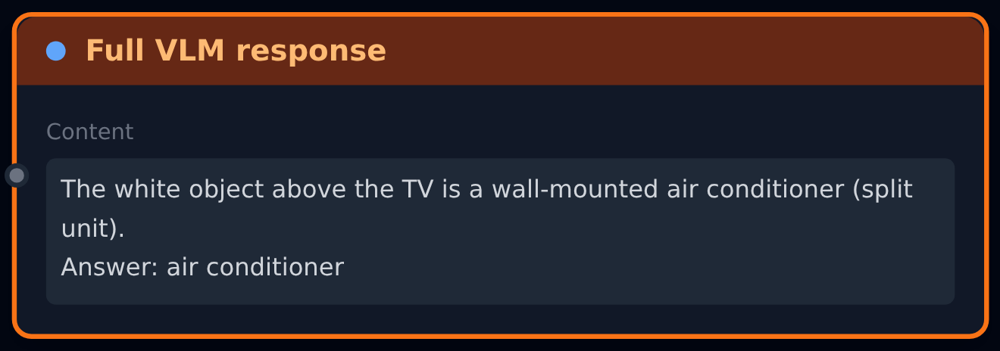
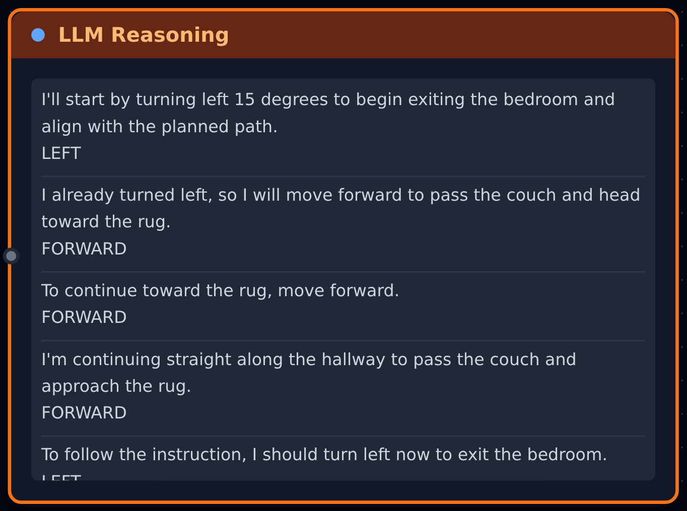
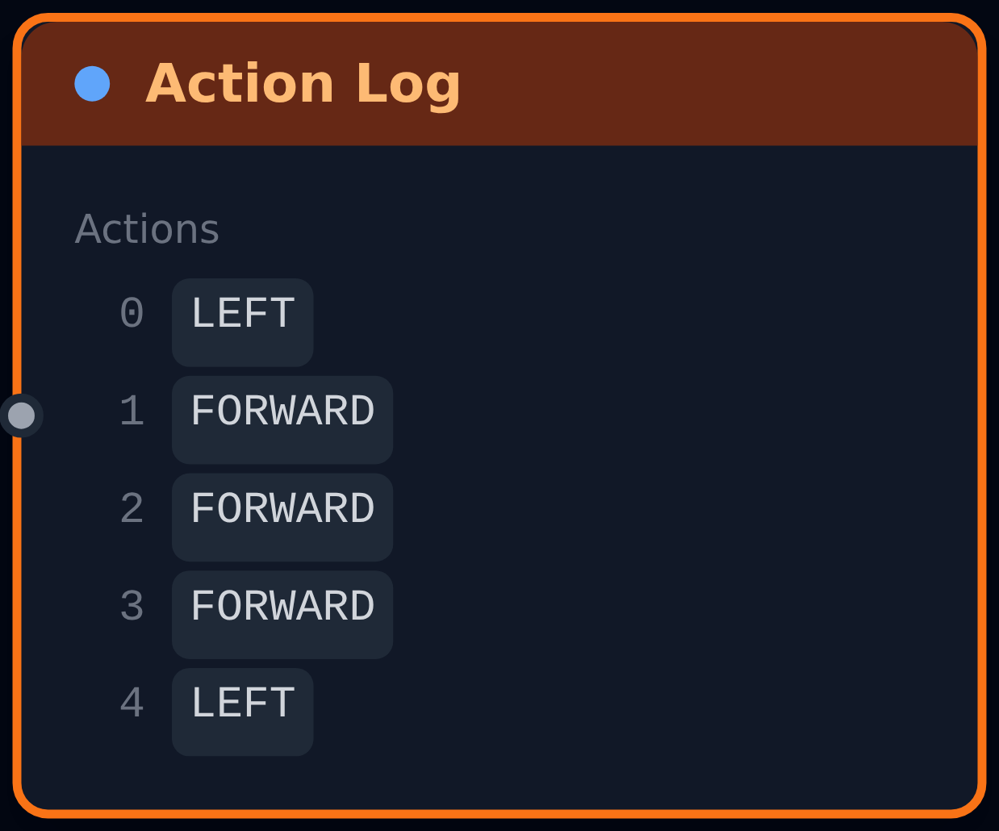
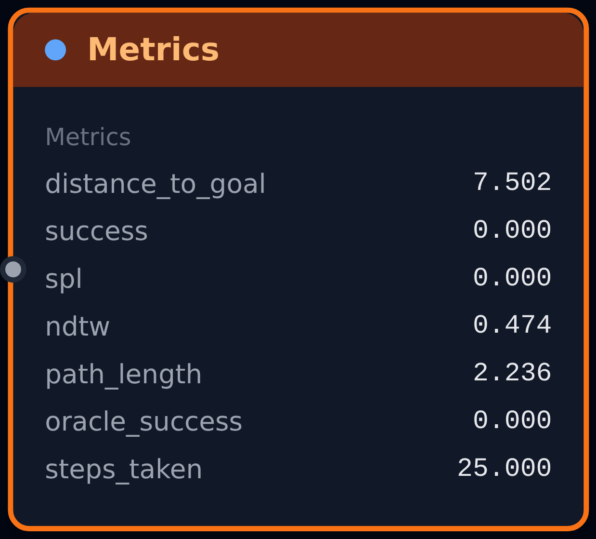
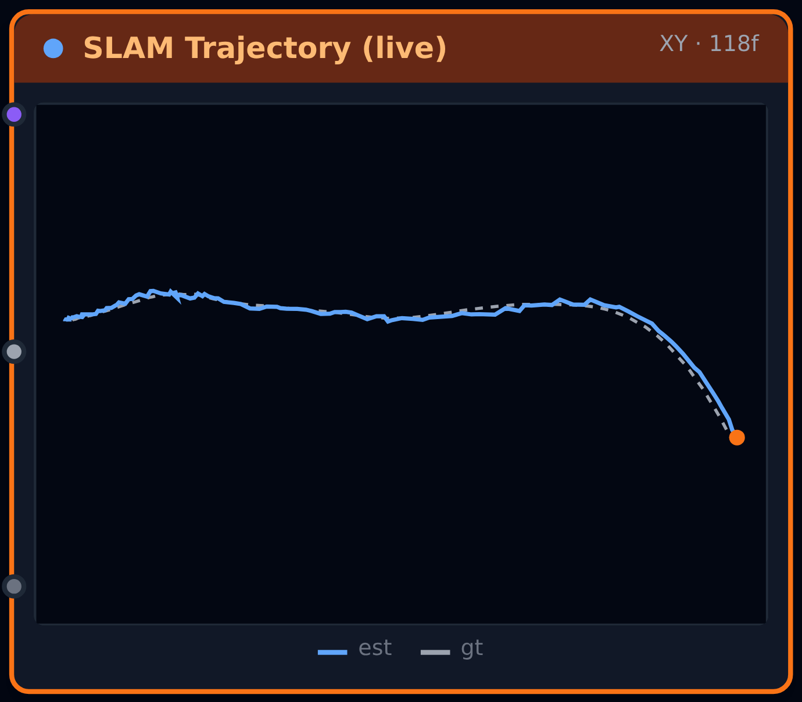
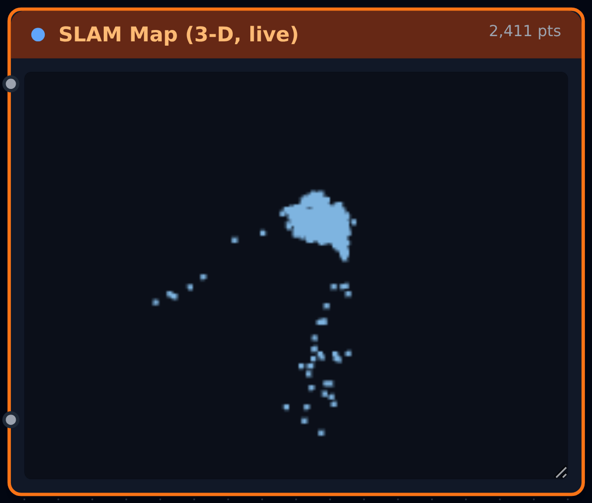

6Execution Logs & Live Views
Two-layer JSONL logs of every node firing; live viewer windows on the canvas — query a run afterwards, watch it as it happens.
Every run produces two things. Logs: the ExecutionLogger captures every node firing automatically — exterior port I/O and timing — and nodes volunteer interior detail via _self_log() (assembled prompts, responses, token counts); it all lands in JSONL — per run on canvas, per episode under batch eval — with a unified ErrorBus for everything that goes wrong. Views: drag a viewer node onto the canvas — image, text, scrolling text, action log, metrics, trajectory, point cloud — and it is a live window that updates at every firing, streamed over one WebSocket, with pause / step / resume one POST away. Query the run afterwards; watch it while it happens.
Design doc: Execution Logs

examples/simple_navigator mid-run (step 5, R2R-CE val_unseen, episode instruction in the status bar). Below the loop, four live viewer windows — LLM reasoning (textScroll), actionLog, metrics, RGB imageViewer — each repainting at its node's every firing.1. The Log System
1.1 Two-layer execution logs (exec_log)
The ExecutionLogger (ADR-observability-003) wraps every node firing: exterior I/O captured automatically, interior detail added via self._self_log(key, value) inside forward(). Each firing emits a short exec_log summary; full records stream to JSONL. Canvas runs persist to outputs/runs/{execution_id}/log.jsonl; batch eval persists per episode to outputs/eval_runs/{run_id}/episodes/ep{idx:04d}/log.jsonl and suppresses the WS event (ExecutionPrinciples.suppress_nav_events). See ADR-eval-004 for the per-episode layout rationale.
The Logs tab is the GUI over these files (frontend/src/logs/LogViewerPage.tsx): pick an execution from the left-hand list, and every firing renders as a row — step number, node label + type, image thumbnails, action badge, per-firing wall time. A summary bar totals the run (steps · firings · wall time · node types); filters narrow by free text, node type, or errors-only; and three view modes switch between Overall (flat entry list), Detail (per-firing I/O), and Canvas (entries laid over the graph, LogCanvasView.tsx).

1.2 Error reporting (error_event)
The ErrorBus (ADR-observability-004, agentcanvas/backend/app/errors.py) is the unified event channel for everything the user needs to see about a run going wrong — distinct from the structured per-firing capture that exec_log provides. Producers covered today:
- Per-node executor catch (
graph_executor.py · _fire_node) — wraps_fire_node(); envelope carriesscope = {node_id, node_type, origin, step, execution_id}. - Graph-level executor catch (
graph_executor.py · run) — top-leveltry/exceptaround the run loop; envelope carriesscope = {step, execution_id}. - FastAPI global
Exceptionhandler (main.py) — uncaught HTTP route exceptions; envelope carriesscope = {endpoint, method}and is also returned as the 500 body so the frontend HTTP wrapper can recover the sameid. LogBridgeHandler— installed on the root logger at INFO+; everylog.info / warning / error / exceptionbecomes an envelope withsource="log". Skipsagentcanvas.errors+ uvicorn / httpx / httpcore / watchfiles / asyncio prefixes to avoid feedback loops + noise.
Bus dispatch is async over a 500-deep queue: publish() does one ring-buffer append (lock-protected) + loop.call_soon_threadsafe(queue.put_nowait, env), so producers stay loop-agnostic and thread-safe. A single dispatcher coroutine started in the FastAPI lifespan drains the queue and fans out to subscribers; the WS bridge subscriber emits each envelope as {type: "error_event", data: envelope.to_dict()} over /ws. The 200-entry ring buffer is exposed at GET /api/errors for backfill — the frontend calls it on every WS (re)connect to recover envelopes published while the socket was down.
1.3 Replay — step back through a logged episode
The Replay tab (frontend/src/replay/ReplayPage.tsx) reconstructs a finished batch-eval episode purely from its per-episode log.jsonl + assets/ — no simulator loaded, no GPU. Pick a run, pick an episode (instruction, step count, ✓/✗ status), then scrub the timeline: prev / play / next with the logged frame in the center and the instruction, episode metrics, and every logged field of the current step on the right. An env nodeset opts in by declaring a replay_parser module on its BaseNodeSet subclass (app/replay/interface.py) — the module only parses JSON and must not import the env's simulator. Parsers that also expose per-step camera render_params unlock smooth mode: intermediate frames are re-rendered between logged steps (10 fps default) by an isolated renderer subprocess spawned via app/replay/renderer_host.py — same pattern as server-mode nodesets, without the graph machinery. Endpoints: GET /api/replay/{run_id}/episodes → GET /api/replay/{run_id}/episodes/{idx}; frames resolve through /api/logs/{run_id}_ep{idx:04d}/assets/.

2. The View System
2.1 Output Viewer Nodes
Output viewer nodes are canvas nodes that display data to the researcher. They don't produce outputs — they're sinks. Most subclass _SinkBase in agent_loop/builtin_nodes.py, which walks each node's display_fields, runs serialize_for_display() on the wired inputs, and emits one viewer_data WS event per firing. A few (imageViewer, and the geometry viewers trajectoryViewer / pointCloudViewer) subclass BaseCanvasNode directly with a custom layout + serialization, but still self-emit the same viewer_data events.
| Node Type | Displays | Notes |
|---|---|---|
imageViewer |
RGB / depth image grid | Configurable ports — config.ports declares one port per cell (IMAGE / DEPTH), plus rows / cols for grid layout (ADR-components-007). Replaced the fixed observationViewer. |
textViewer |
Latest TEXT (single block) | text_viewer display_type; scalar value (ADR-components-008). |
textScroll |
Accumulating TEXT history (scrollable stack) | Shares the text_viewer renderer with textViewer — accumulate=True routes each write through _SinkBase's vacc_* history path; frontend renders the array as stacked blocks with +N earlier trimming (ADR-components-008, replaced thinkingLog). |
actionLog |
Action history | log_list renderer; structured ACTION entries. |
metrics |
SPL / SR / nDTW / SDTW | metric_table renderer. |
trajectoryViewer |
Top-down camera trajectory (estimated vs GT) + map-point scatter | Custom trajectory layout — hand-rolled SVG bird's-eye (no chart lib). Grows live per step from accumulated pose / gt_pose (same vacc_* history path); an optional map_handle adds a projected point scatter. Projected by serialize_trajectory_for_viewer in standard/wire_types.py. With align=on (default) it SE3-fits the estimate onto the GT frame (align_est_to_gt, the standard ATE convention) so the two overlay and the gap reads as drift; axes=auto (default) picks the top-down plane from the data (drops the smallest-spread axis) since aligning into an arbitrary world frame makes a fixed XZ no longer necessarily top-down. |
pointCloudViewer |
3-D orbit view of a fused point cloud | Custom pointcloud layout — three.js / React-Three-Fiber in a lazy-loaded chunk. Takes a cloud .npz handle (get_map / dense / reconstruct) or an inline array; serialize_pointcloud_for_viewer subsamples to a cap and packs base64 Float32Array/Uint8Array blocks. Fires on a handle, not per-step — a source can stream a live-growing cloud by exporting on a throttle (e.g. model_pyslam__get_map's stream_every). The canvas is pinned to fill its box via CSS (.ac-pc-box canvas) because React Flow's zoom transform pollutes R3F's own measurement; a CameraRig auto-frames the cloud only until the first user orbit, so live updates never reset the viewpoint. |
graphOut |
Consolidated nav_step fields |
The only sink still consumed by _broadcast_step; feeds the global NavigatePage store and live nav status bar. |
Viewer sinks serialize and emit their own viewer_data events inside forward(). Only graphOut still buffers inputs in node.state["_last_inputs"] for the iteration-boundary nav_step consolidation. The legacy _OUTPUT_TYPES registry that special-cased every viewer in the executor has been deleted.
What each one looks like mid-run — all captured live from the demo graphs (examples/simple_navigator, examples/simple_eqa, vln/unverified/pyslam_tum_slam):

imageViewer — 1×2 grid, one port per cell (TUM RGB + depth).
textViewer — latest TEXT value (the EQA reasoner's VLM response).
textScroll — accumulating history, one block per firing.
actionLog — indexed action entries, one per step.
metrics — metric table from env_habitat__evaluate after the loop.
trajectoryViewer — est (blue) SE3-aligned onto GT (grey), growing per step.
pointCloudViewer — orbitable three.js view of the live sparse map (~frame 120).The geometry viewers in motion — the same pyslam_tum_slam graph, streaming all three at once:
get_map streams handles every 20 frames — then an orbit of the finished map.2.2 Per-node viewer_data (primary path)
Each viewer sink self-emits a viewer_data event at every firing. The frontend's useNodeOutput(nodeId) hook subscribes by node_id, so panels render independently of whether the upstream graph is still mid-iteration.
# _SinkBase.forward() — serialize wired inputs, accumulate if needed, broadcast
fields[key] = serialize_for_display(value) # IMAGE/DEPTH → base64, etc.
if field.accumulate: # textScroll, actionLog
history = getattr(ctx, f"vacc_{key}", []) + [fields[key]]
setattr(ctx, f"vacc_{key}", history)
fields[key] = list(history)
await broadcast(ctx.session._ws("viewer_data",
{"node_id": self.node_id, "step": ctx.step, "fields": fields}))
2.3 Consolidated nav_step (graphOut path)
_broadcast_step() still fires at each iterOut boundary (two-pivot model, ADR-dataflow-008) but only scans graphOut sinks — it merges their _last_inputs, converts numpy arrays to base64, and emits one nav_step event for the global navigation store. Graphs without an graphOut sink produce no nav_step — they rely on viewer_data alone.
2.4 Playback Controls
The frontend toolbar sends control commands:
| Control | Endpoint | Effect |
|---|---|---|
| Play | POST /run |
Start execution |
| Pause | POST /run/pause |
Set pause event — executor blocks at next iteration |
| Resume | POST /run/pause (toggle) |
Clear pause event |
| Stop | POST /run/stop |
Set stop event — executor exits loop |
| Step | Pause + single advance | Execute one iteration |
Max step budget, and the live Step N status.3. Transport & Protocol
Endpoint: ws://[host]/ws — one WebSocket carries every event type below.
3.1 Two broadcast paths
Two broadcast paths coexist (TODO #38 refactor, 2026-04-10):
GraphExecutor
│
├─ (A) Viewer sinks self-emit per-node viewer_data events
│ (imageViewer, textViewer, textScroll, actionLog, metrics)
│ │
│ └─ _SinkBase.forward() → serialize_for_display() →
│ broadcast({type: "viewer_data", node_id, step, fields})
│
├─ (B) graphOut sinks buffer _last_inputs → IterOut fires →
│ _broadcast_step() consolidates into one nav_step event
│
├─ Per-node firing → ExecutionLogger → exec_log event (ADR-observability-003)
├─ Status changes → nav_status; loop end → nav_complete
└─ Batch eval → eval_progress + eval_episode_done (ADR-eval-002)
│
└─ broadcast() → WebSocket → all connected clients
│
ws.ts (WSManager)
│
┌──────────────┼──────────────┐
▼ ▼ ▼
store.ts per-node hook UI panels
(navSteps) useNodeOutput (render)
(execution_id
+ node_id routing)
The old single-path consolidation (every viewer type was special-cased in _broadcast_step) is gone — viewer sinks now own their own serialization and broadcast directly, and the executor only consolidates graphOut for the global NavigatePage / EvalPage store. The _OUTPUT_TYPES registry in the executor was deleted with the refactor.
3.2 Message Envelope
{
type: string, // Event type
data: unknown, // Type-specific payload
timestamp: string, // ISO 8601
execution_id?: string // Canvas execution routing
}
3.3 Event Types
| Type | When | Payload |
|---|---|---|
viewer_data |
Viewer sink fires (per node) | { node_id, step, fields } — serialized port payloads keyed by port name (ADR-components-006, TODO #38) |
nav_step |
iterOut fires |
Consolidated snapshot from graphOut sinks — RGB/depth base64, action, position, state containers |
nav_status |
Execution state change | { status: "running" \| "paused" \| "done" \| "error", step } |
nav_complete |
Loop finished | { metrics: { SPL, SR, nDTW, SDTW }, step } |
exec_log |
Per-node firing (canvas mode) | { step, node_id, node_type, duration_ms, error } — suppressed in batch eval (ADR-observability-003) |
eval_progress |
Episode queued / started | { run_id, worker_id, episode_index, done, total } (ADR-eval-002) |
eval_episode_done |
Episode finished in batch | { run_id, worker_id, episode_index, result } (ADR-eval-002) |
error_event |
Any envelope published to ErrorBus |
ErrorEnvelope — { id, ts, severity, source, code, title, message, scope, details, hint } (ADR-observability-004) |
nav_llm_step |
— | Not emitted today; frontend still has a handler wired |
3.4 nav_step Payload
{
step: number,
action: number, // 0-3
action_name: string, // "FORWARD", "LEFT", "RIGHT", "STOP"
position: [number, number, number],
rgb_base64: string, // base64 PNG
depth_base64: string, // base64 PNG
response: string, // LLM response text
done: boolean,
metrics?: Record<string, number>, // only when done=true
containers?: Record<string, { // state container snapshots
label: string,
states: Record<string, { type, value_type, size?, value?, preview? }>
}>
}
3.5 Execution ID Routing
Multiple agent graphs can run concurrently. The execution_id mechanism ensures events reach the correct output panels:
- Frontend generates an
exec_<timestamp>_<random>id when the user clicks Play (not a UUID) - The id is sent as
execution_idinPOST /run - Backend tags every WebSocket event with the same
execution_id - Frontend filters events by
execution_idand routes to the correct canvas nodes
Graph A (exec_id: "aaa") → Output nodes see only "aaa" events
Graph B (exec_id: "bbb") → Output nodes see only "bbb" events
3.6 Batch eval events
BatchEvalRunner (ADR-eval-002) emits eval_progress + eval_episode_done tagged with worker_id so the Eval page can render per-worker lanes. A run_id groups events into one batch.
3.7 Frontend wiring
WSManager (ws.ts):
class WSManager {
connect() // Auto-reconnect with exponential backoff
on(type: string, handler): unsub // Subscribe to event type
on('*', handler): unsub // Wildcard: all events
}
Zustand store (store.ts) — subscribeWS() wires WebSocket events to dataflow store updates:
| WS Event | Store Update |
|---|---|
nav_step |
Appends to navSteps, updates navCurrentRgb/Depth (driven by graphOut) |
nav_status |
Sets navStatus |
nav_complete |
Sets navMetrics, navStatus: 'done' |
viewer_data |
Dispatched via useNodeOutput(nodeId) hook — routed by node_id, bypasses the global store |
exec_log |
Feeds the LogPanel in the bottom OutputDrawer |
error_event |
Routed to useErrorStore.ingest() — drives the toast layer + Report tab + toolbar bell badge (ADR-observability-004) |
eval_progress / eval_episode_done |
Drives the Eval page (EvalProgressBar, EpisodesTable, per-worker grouping) |
4. Node Schema API
The frontend fetches node rendering metadata at design time via a REST endpoint. This is distinct from the runtime WebSocket events above — it's a one-shot query used when the canvas loads to know how to render each node type.
4.1 Endpoint
GET /api/components/node-schemas
Returns all registered node types (built-in + loaded nodesets) with port metadata and ui_config.
4.2 Response Shape
[
{
"type": "env_habitat__observe",
"display_name": "Observe",
"description": "Get current RGB + depth observation",
"category": "env",
"icon": "Eye",
"kind": "block",
"ports_mode": "mirror",
"config_schema": {},
"default_config": {},
"ui_config": {
"color": "emerald",
"layout": "block",
"width": "",
"min_height": "",
"rounding": "",
"min_width": "",
"max_width": "",
"config_fields": [],
"display_fields": []
},
"input_ports": [
{ "name": "trigger", "wire_type": "BOOL", "description": "...", "optional": false }
],
"output_ports": [
{ "name": "rgb", "wire_type": "IMAGE", "description": "...", "optional": false }
]
}
]
4.3 ui_config Fields
| Field | Type | Purpose |
|---|---|---|
color |
string |
Tailwind color name for node chrome (e.g. "emerald", "orange", "pink") |
layout |
string |
Rendering layout: "block" (default), "strip" (narrow gate), "viewer" (output display), "imageGrid" (image-panel grid), "note" (canvas sticky-note) |
width |
string |
CSS width override (e.g. "40px" for strip nodes) |
min_height |
string |
CSS min-height override |
min_width |
string |
CSS min-width override |
max_width |
string |
CSS max-width override |
rounding |
string |
Tailwind border-radius class (e.g. "rounded-r-lg") |
config_fields |
list |
Editable fields shown in the node body (type, label, options, default) |
display_fields |
list |
Read-only display areas (type, label) — used by viewer-layout nodes |
config_fields and display_fields are serialized from ConfigField and DisplayField dataclasses defined on each BaseCanvasNode subclass's ui_config ClassVar (ADR-components-004).
4.4 Dynamic Option Injection
Config fields with a __DYNAMIC_PROFILES__ sentinel in their options list are replaced at response time with the live LLM profile list from ProfileStore. This enables the LLMCallNode's model selector dropdown to reflect the user's configured profiles without hardcoding.
4.5 Key Files
| File | Role |
|---|---|
agentcanvas/backend/app/api/platform/components.py |
list_node_schemas(), _serialize_ui_config(), _inject_dynamic_options() |
agentcanvas/backend/app/components/bases.py |
NodeUIConfig, ConfigField, DisplayField dataclasses |
agentcanvas/backend/app/agent_loop/builtin_nodes.py |
NODE_HANDLERS registry + built-in viewer sinks (_SinkBase + ImageViewerSink / TextViewerSink / TextScrollSink / ActionLogSink / MetricsViewerSink) + OutputPortNode — the retired graph_executor.py module's role folded in here |
5. Key Files
| File | Role |
|---|---|
agentcanvas/backend/app/agent_loop/graph_executor.py |
_broadcast_step() (outputPort consolidation) + exec_log emission around each node firing |
agentcanvas/backend/app/agent_loop/builtin_nodes.py |
_SinkBase + ImageViewerSink / TextViewerSink / TextScrollSink / ActionLogSink / MetricsViewerSink — self-emit viewer_data |
agentcanvas/backend/app/agent_loop/eval_batch.py |
eval_progress / eval_episode_done emission |
agentcanvas/backend/app/logging/logger.py |
ExecutionLogger — JSONL persistence + exec_log envelope (ADR-observability-003) |
agentcanvas/backend/app/state.py |
broadcast() — fan out a WSMessage to every connected client |
agentcanvas/backend/app/api/execution/websocket.py |
/ws endpoint — accepts connections, registers/unregisters clients |
agentcanvas/backend/app/standard/wire_types.py |
serialize_for_display(), image_to_base64(), depth_to_base64() |
agentcanvas/backend/app/agent_loop/loop_runner.py |
Pause / stop / resume event management |
agentcanvas/frontend/src/ws.ts |
WSManager — auto-reconnect WebSocket client |
agentcanvas/frontend/src/store.ts |
Zustand store + subscribeWS() for nav_* and eval events |
agentcanvas/frontend/src/canvas/nodes/agentloop/inner/layouts/useNodeOutput.ts |
Per-node viewer_data hook |
agentcanvas/frontend/src/canvas/runPipeline.ts |
Canvas → API execution bridge |
agentcanvas/frontend/src/logs/LogViewerPage.tsx |
Logs tab — execution list, summary bar, filters, Overall / Detail / Canvas view modes |
agentcanvas/frontend/src/replay/ReplayPage.tsx |
Replay tab — run / episode pickers, timeline scrubber, smooth mode |
agentcanvas/backend/app/replay/interface.py |
BaseReplayParser contract + timeline schema; renderer_host.py spawns smooth-mode renderers |
Status
| Item | Status | Notes |
|---|---|---|
imageViewer node |
Done | ImageViewerSink in builtin_nodes.py; configurable ports + rows/cols grid (ADR-components-007, replaced fixed observationViewer) |
textViewer node |
Done | TextViewerSink in builtin_nodes.py (ADR-components-008) |
textScroll node |
Done | TextScrollSink in builtin_nodes.py; shares text_viewer renderer with textViewer via accumulate=True (ADR-components-008, replaced thinkingLog) |
actionLog node |
Done | ActionLogSink in builtin_nodes.py |
metrics node |
Done | MetricsViewerSink in builtin_nodes.py |
graphOut node |
Done | GraphOutNode — only sink still consumed by _broadcast_step |
broadcast node |
Removed | No broadcast node type / BroadcastNode class in the tree anymore |
_OUTPUT_TYPES registry |
Removed | Deleted with the TODO #38 viewer refactor; viewers now own their own broadcast |
trajectory node |
Deferred | No longer in _OUTPUT_TYPES; no handler registered. Planned top-down map viewer |
Per-node viewer_data events |
Done | _SinkBase.forward() serializes + broadcasts; frontend routes by node_id via useNodeOutput |
_last_inputs buffering |
Done (outputPort only) | Other viewer sinks do not use this field anymore |
_broadcast_step consolidation |
Done | Fires at iterOut under the two-pivot model (ADR-dataflow-008); only graphOut sinks contribute |
serialize_for_display |
Done | Backs every viewer_data emission (standard/wire_types.py) |
image_to_base64 / depth_to_base64 |
Done | standard/wire_types.py |
WebSocket broadcast() |
Done | Lives in state.py (moved from api/websocket.py during the api/ domain split) |
/ws endpoint |
Done | api/execution/websocket.py accepts + registers clients |
WSManager (auto-reconnect, on(), connected) |
Done | ws.ts with exponential backoff |
subscribeWS() store wiring |
Done | nav_step, nav_status, nav_complete, exec_log, eval_progress, eval_episode_done |
execution_id routing |
Done | End-to-end: backend tags events, frontend filters by ID |
nav_step event |
Done | Emitted at iterOut boundary |
nav_status event |
Done | Emitted on running / paused / done / error |
nav_complete event |
Done | Emitted with final metrics |
nav_llm_step event |
Not emitted | Frontend handler still wired; no backend producer today |
exec_log event (ADR-observability-003) |
Done | Per firing in canvas mode; suppressed under ExecutionPrinciples.suppress_nav_events in batch eval |
| Execution log persistence | Done | ExecutionLogger → JSONL at outputs/runs/{execution_id}/ (canvas) / outputs/eval_runs/{run_id}/episodes/ep{NNNN}/ (eval, per episode, ADR-eval-004) |
eval_progress / eval_episode_done (ADR-eval-002) |
Done | Carries worker_id for per-worker UI grouping |
| Playback controls (pause / stop) | Done | POST /run/pause, POST /run/stop |